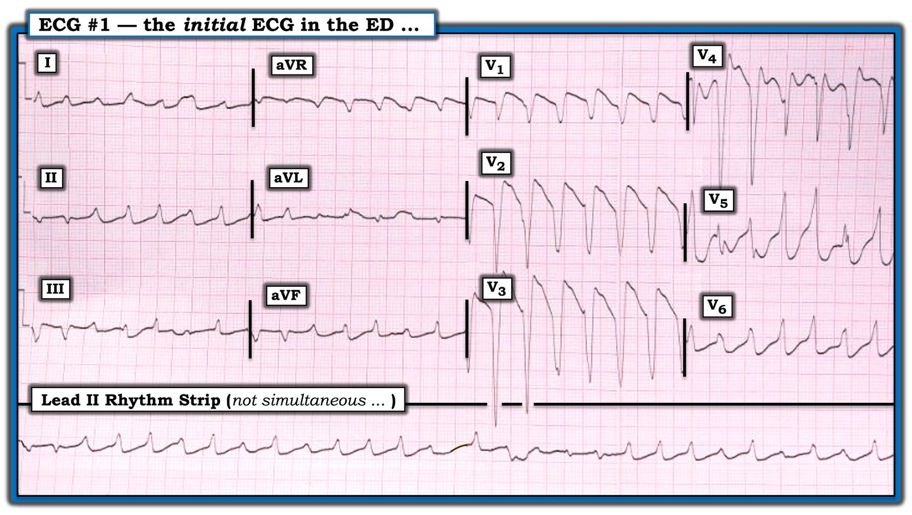
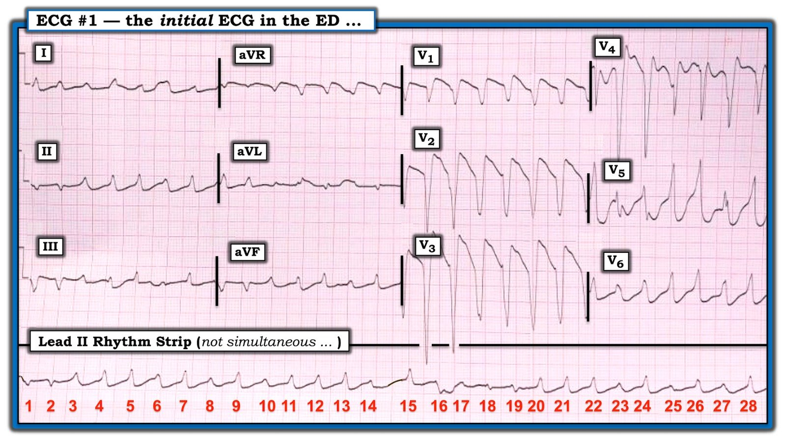
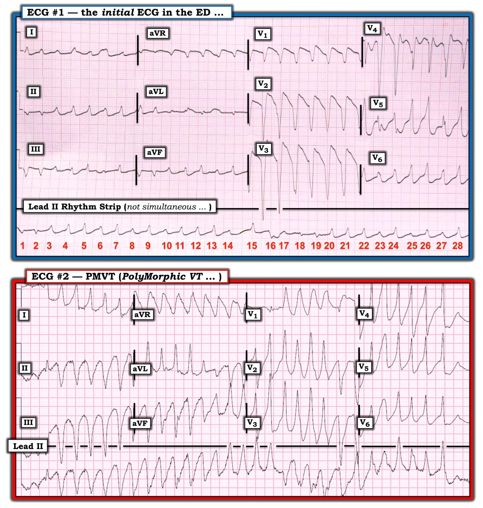

01/06/2020 — Một kiểu nhịp QRS rộng khác — VT đa hình thái?
Bản dịch tiếng Việt của bài "A Different Kind of Wide Rhythm — Pleomorphic VT?" – Dr. Smith’s ECG Blog. Giữ nguyên toàn bộ 3 hình ảnh của bản gốc.
======================================
BÌNH LUẬN CỦA TÔI, bởi KEN GRAUER, MD (1/6/2020 — Cập nhật cho WordPress ngày 1/2/2026 ):
BẠN được yêu cầu diễn giải điện tâm đồ trong Hình 1. Đáng tiếc là không có bệnh sử nào để hỗ trợ.
- NHỮNG khả năng chẩn đoán nào cho nhịp này?
- Nhịp này có ý nghĩa tiên lượng ra sao?
= = =
Hình 1: Điện tâm đồ ban đầu tại khoa cấp cứu. Xin lưu ý rằng dải nhịp DII dài không được ghi đồng thời với bản ghi 12 chuyển đạo phía trên nó.


= = =
SUY NGHĨ CỦA TÔI về điện tâm đồ #1:
Ấn tượng ban đầu của tôi khi nhìn điện tâm đồ trong Hình 1 — là nhịp này hoặc là AFib đáp ứng thất nhanh ở bệnh nhân WPW — hoặc là — PMVT (PolyMorphic VT — nhịp nhanh thất đa dạng). Khi xem kỹ hơn — tôi nhận ra rằng không khả năng nào trong 2 khả năng này có vẻ đúng.
- Hình dạng QRS thay đổi trên bản ghi này. Nhìn chung, phức bộ QRS trông rộng — dù ở một số chuyển đạo, nhiều nhát trông hẹp. Tôi ngờ rằng đó là vì một phần phức bộ QRS ở một số chuyển đạo nằm trên đường đẳng điện. Tôi cho rằng “chủ đề” của bản ghi này là QRS rộng.
- Tôi không thấy dấu hiệu nào của hoạt động nhĩ.
- Lý do ban đầu tôi nghĩ nhịp nền là AFib — là vì không thấy hoạt động nhĩ ở bất kỳ chuyển đạo nào và nhịp “trông” không đều. Tuy nhiên, khi đo các khoảng R-R bằng compa đo — tôi ngạc nhiên nhận ra rằng trừ một vài ngoại lệ hiếm hoi (tức là các nhát #15, 16 và 17 trong Hình 2) — khoảng R-R vẫn hằng định ở tất cả các nhát còn lại trên dải nhịp DII dài!
= = =
Hình 2: Tôi đã đánh số các nhát trên dải nhịp DII dài. Khi bạn xem bản ghi này — Hãy nhớ rằng dải DII dài này không được ghi đồng thời với bản ghi 12 chuyển đạo phía trên nó.


= = =
CÁC BƯỚC TIẾP THEO khi Đánh giá điện tâm đồ #1:
Việc phát hiện khoảng R-R đều chính xác ở 25 trong số 28 nhát trên dải nhịp DII dài đã loại trừ khả năng AFib. Đến lúc này tôi rút ra các kết luận sau.
- Nhịp trên điện tâm đồ #1 (trừ 3 nhát) — là một nhịp nhanh QRS rộng đều (Wide-Complex Tachycardia — WCT).
- Tần số thất ~170/phút.
- Hình dạng QRS thay đổi ở các đoạn khác nhau của bản ghi.
- Không có hoạt động nhĩ.
Kết luận của tôi: Các khả năng chẩn đoán cho nhịp trong Hình 2 gồm: i) Một dạng SVT vào lại (SupraVentricular Tachycardia — nhịp nhanh trên thất), trong đó hình dạng QRS thay đổi do một dạng dẫn truyền lệch hướng luân phiên bất thường nào đó; — hoặc, ii) VT với hình dạng QRS thay đổi.
- Về mặt thống kê — ít nhất 80-90% các nhịp nhanh QRS rộng đều không có dấu hiệu hoạt động nhĩ là VT. Với mức QRS giãn rộng mà ta thấy ở đây, cùng hình dạng QRS kỳ dị, thay đổi liên tục (và việc khó có khả năng tồn tại quá nhiều dạng dẫn truyền lệch hướng trên thất như vậy) — tôi cho rằng khả năng nhịp này là một dạng nào đó của VT là ít nhất 90-95%.
= = =
Thuật ngữ về VT:
Trước khi đi tiếp — có lẽ sẽ hữu ích nếu ôn lại một số thuật ngữ đã được dùng để mô tả hình thái của các dạng VT khác nhau. Những thuật ngữ này gồm:
- VT đơn dạng (Monomorphic VT) — trong đó hình dạng QRS tương tự nhau (nếu không nói là giống hệt) suốt cơn VT.
- VT đa dạng (Polymorphic VT — PMVT) — trong đó hình dạng QRS và/hoặc trục thay đổi liên tục từ nhát này sang nhát kế tiếp suốt cơn VT. PMVT không phải là nhịp đều — và thường khá không đều. Khi PMVT đi kèm khoảng QT dài — nhịp khi đó được định nghĩa là xoắn đỉnh (Torsades de Pointes) (Xin xem Bình luận của tôi ở cuối bài ngày 29 tháng Tư năm 2020 trên Dr. Smith’s ECG Blog).
- VT đa hình thái (Pleomorphic VT) — trong đó thấy nhiều hơn một hình dạng QRS trong một cơn VT. VT đa hình thái khác PMVT — vì hình dạng QRS không thay đổi từ nhát này sang nhát kế tiếp. Thay vào đó, một hình dạng QRS sẽ xuất hiện trong một số nhát — rồi một hình dạng khác có thể chiếm chỗ và kéo dài thêm một loạt nhát nữa. Có thể thấy nhiều hình dạng khác nhau.
- VT hai chiều (Bidirectional VT) — trong đó trục QRS luân phiên theo từng nhát. Dạng VT độc đáo và ít gặp này phân biệt với PMVT và VT đa hình thái — vì thường thấy một kiểu hình nhất quán (các chu kỳ dài-ngắn luân phiên) suốt cơn VT. Như tên gọi đã ngụ ý, VT hai chiều có 2 hình dạng QRS — và chúng luân phiên cách một nhát. (BẤM VÀO ĐÂY — để xem một ca bệnh và Bài ôn tập của tôi về VT hai chiều).
= = =
Hãy QUAY LẠI với Hình 2:
Ghi nhớ 4 cách phân loại hình thái VT ở trên — CÁCH NÀO phù hợp nhất với điện tâm đồ-1?
= = =
SUY NGHĨ CỦA TÔI:
- Nhịp trên điện tâm đồ #1 rõ ràng không phải VT đơn dạng — vì hình dạng QRS trong Hình 2 hiển nhiên thay đổi suốt dải nhịp DII dài.
- Nhịp này không phải VT hai chiều — vì kiểu thay đổi hình dạng QRS không luân phiên cách một nhát. Thay vào đó — không có kiểu hình nhất quán nào trong sự thay đổi hình dạng QRS ở Hình 2.
- Nhịp trên điện tâm đồ #1 cũng không phải PMVT — vì khoảng R-R lại đều ở gần như mọi nhát trên bản ghi này — và, thay vì hình dạng QRS thay đổi từ nhát này sang nhát kế tiếp — có nhiều chỗ trên bản ghi mà một hình dạng QRS tương tự dường như lặp lại trong ít nhất vài nhát liên tiếp.
- Về mặt hình thái (và bằng phương pháp loại trừ) — tôi tin rằng nhịp trên dải nhịp DII dài của điện tâm đồ #1 phù hợp nhất với VT đa hình thái (pleomorphic VT).
= = =
So sánh điện tâm đồ #1 với điện tâm đồ #2:
Tôi nghĩ cách dễ nhất để lập luận cho chẩn đoán VT đa hình thái (pleomorphic VT) là so sánh 2 bản ghi trong Hình 3:
- Tôi lấy điện tâm đồ #2 trong Hình 2 [người dịch: nguyên văn ghi “Figure-2”, nhiều khả năng là lỗi đánh máy] từ bài ngày 12 tháng Mười năm 2013 trên Dr. Smith’s ECG Blog. Chẩn đoán PMVT hiện rõ ngay từ dải nhịp DII dài của điện tâm đồ #2 — cho thấy phức bộ QRS rộng, không giống bất kỳ dạng blốc dẫn truyền nào đã biết — trong đó hình dạng QRS thay đổi liên tục từ nhát này sang nhát kế tiếp.
- Cũng lưu ý trên dải nhịp DII dài của điện tâm đồ #2, trục QRS thường xuyên chuyển hướng sau mỗi vài nhát như thế nào — ban đầu dương ở một nhát duy nhất — rồi âm — rồi dương ở giữa bản ghi — rồi lại âm — trước khi chuyển sang dương ở 7 nhát cuối của bản ghi.
- Giờ nhìn sang điện tâm đồ #1 trong Hình 2 — tôi thấy thú vị ở chỗ ngoài việc biểu hiện khoảng R-R hằng định ở 25 trong số 28 nhát trên bản ghi — còn có một số lượng giới hạn các hình dạng QRS có xu hướng lặp lại. Hãy nhớ rằng dải nhịp DII dài ở cuối điện tâm đồ #1 không ghi đồng thời với bản ghi 12 chuyển đạo phía trên — Lưu ý 8 phức bộ QRS ở các chuyển đạo V1, V2, V3 trông rất giống VT đơn dạng. Trên dải nhịp DII dài — Chẳng phải hình dạng QRS tương tự nhau ở các nhát #3,4,5; 7; 9; 11,12,13; 20,21,22; 24; 26; và 28 sao? — Chẳng phải một hình dạng QRS thứ 2 có xu hướng lặp lại ở các nhát #1,2; 16; 18,19 sao?
- Về mặt kỹ thuật — nhịp trên điện tâm đồ #1 không thỏa mãn định nghĩa sách giáo khoa mà tôi đã nêu ở trên cho VT đa hình thái. Nhưng tôi nghĩ sự đều đặn lạ thường của khoảng R-R (ở 25 trong số 28 nhát trên DII dài) — cùng sự giống nhau không thể nhầm lẫn của rất nhiều nhát với 2 hình dạng QRS khác nhau khiến nhịp này gần nhất với tiêu chuẩn của VT đa hình thái (pleomorphic VT).
= = =
Hình 3: So sánh điện tâm đồ #1 với một ví dụ PMVT mà tôi lấy từ bài ngày 12 tháng Mười năm 2013 trên Dr. Smith’s ECG Blog.


= = =
TẠI SAO CẦN QUAN TÂM đến hình dạng QRS trong VT?
Phân loại kiểu hình thái của VT có thể cung cấp manh mối về nguyên nhân, kết cục và điều trị.
- VT đơn dạng (monomorphic VT) có thể xảy ra ở bệnh nhân có hoặc không có bệnh tim cấu trúc nền. Vì trình tự hoạt hóa thất là hằng định trong VT đơn dạng (đó là lý do mọi nhát trông giống nhau) — điều trị thành công (bằng thuốc hoặc sốc điện chuyển nhịp) nhìn chung dễ đạt được hơn.
- Sự xuất hiện VT đơn dạng ở bệnh nhân không có bệnh tim cấu trúc nền (và không có QT kéo dài hay bất thường chuyển hóa/điện giải) — được gọi là VT vô căn (idiopathic VT). “Tin tốt” — là tiên lượng dài hạn chung của bệnh nhân VT vô căn thường rất tốt.
- Như đã nói ở trên — VT hai chiều (bidirectional VT) ít gặp. Hãy nghĩ đến ngộ độc digitalis và CPVT (Catecholaminergic Polymorphic VT — VT đa dạng do catecholamine) như những nguyên nhân tiềm tàng mà ở đó bạn dễ gặp VT hai chiều hơn.
- PMVT được chia thành 2 nhóm, tùy theo khoảng QT có sẵn từ trước có kéo dài hay không. PMVT xảy ra kèm QTc nền kéo dài — được định nghĩa là xoắn đỉnh (Torsades de Pointes). Xoắn đỉnh thường có nguyên nhân đa yếu tố (tức là do thuốc, thiếu hụt điện giải, rối loạn thần kinh trung ương và/hoặc rối loạn nền khác có thể tạo thuận lợi cho QT kéo dài). Các khía cạnh MẤU CHỐT trong điều trị gồm Mg++ tĩnh mạch (thường ở liều cao) + tìm và “sửa” nguyên nhân gây QTc dài.
- Ngược lại — PMVT không kèm QT kéo dài thường có nguyên nhân thiếu máu cục bộ nhất. Dù Mg++ tĩnh mạch cũng được chỉ định làm điều trị ban đầu cho PMVT với QT bình thường — rõ ràng nó ít có khả năng đáp ứng với Mg++ tĩnh mạch hơn so với khi khoảng QT kéo dài. Thay vào đó, có thể cần các thuốc chống loạn nhịp như amiodarone hoặc thuốc chẹn ß — và/hoặc điều trị nhắm vào việc khắc phục thiếu máu cục bộ.
- VT đa hình thái (pleomorphic VT) ít được biết đến hơn các dạng hình thái VT khác. Bệnh nhân VT đa hình thái nhìn chung có bệnh tim cấu trúc nền đáng kể. Một số cơ chế đã được đề xuất để giải thích kiểu hình VT đa hình thái, trong đó có thể có một hoặc nhiều loạt VT với một hình dạng QRS tương tự nhau — rồi bị xen ngắt bởi các loạt VT với 1 hoặc nhiều hình dạng QRS khác. Các cơ chế tiềm tàng giải thích VT đa hình thái rất phức tạp — và bao gồm khả năng: i) một vòng VT duy nhất với nhiều hơn một vị trí lối ra; — ii) sự hiện diện của nhiều hơn một vòng VT; — và/hoặc, iii) đặc tính dẫn truyền thay đổi làm biến đổi trình tự hoạt hóa (Liu & Josephson — Circ Arrhythm Electrophyiol 4:2-4 2011).
VỀ MẶT LÂM SÀNG — điểm “cần nhớ” quan trọng từ ca hôm nay, là hình dạng QRS thay đổi bất chấp tần số thất hằng định mà ta thấy trên điện tâm đồ #1 — gợi ý chẩn đoán VT đa hình thái (pleomorphic VT). Thực thể này dường như tạo thuận lợi cho các tình trạng vào lại không ổn định, làm tăng nguy cơ chuyển từ VT thành PMVT hoặc rung thất (VFib).
- Điều này có thể giải thích vì sao VT đa hình thái đáp ứng kém hơn với điều trị chống loạn nhịp — và tỷ lệ bệnh tật và tử vong cao hơn dường như đi kèm loạn nhịp này.
- Diễn tiến của ca hôm nay: Dù tôi không biết đầy đủ chi tiết của ca này — tôi được biết bệnh nhân này không đáp ứng với điều trị chống loạn nhịp và nhiều lần sốc điện. Đáng tiếc là — ông ấy đã không thể được hồi sức thành công.
= = =
LƯU Ý: Xin chân thành cảm ơn Zhang Mingming (Trung Quốc) đã đóng góp ca bệnh này.
= = =
= = =